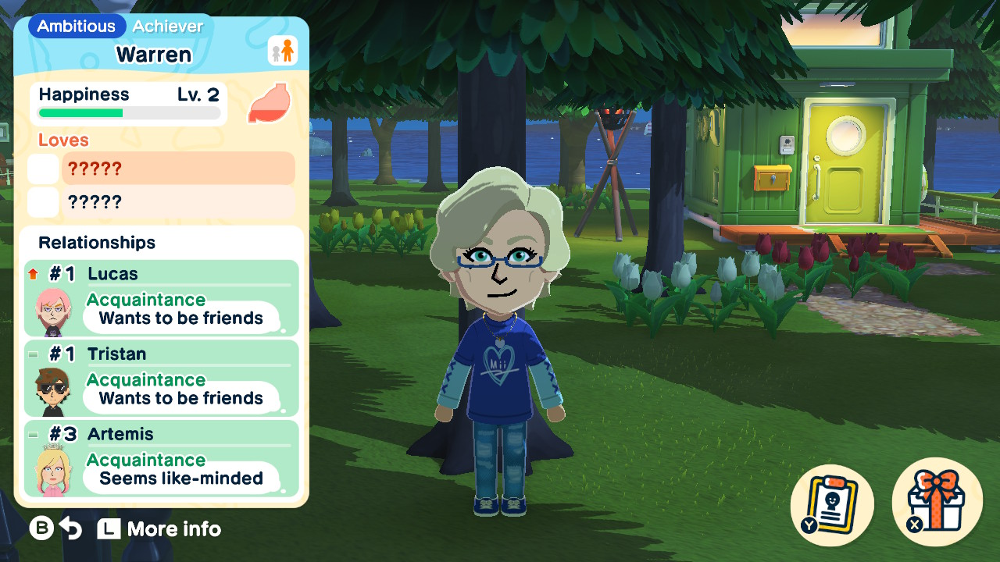

About Tomodachi Life
By now, you have probably seen clips of Nintendo's newest game, Tomodachi Life: Living The Dream, or maybe you've at least heard about it. It seems like everyone is talking about it; on Tiktok, Youtube, Twitch, etc. But what about this game is so interesting? Why does everyone love it so much?
Hopefully after reading this article, you'll understand why! I, too, am obssessed with this game, and I've been playing it everyday since it came out. But, if you're reading this article, I'm guessing you don't know much about the game already; so let's help answer what is probably your biggest question; What IS Tomodachi Life?
What Is Tomodachi Life?
If you already know what Tomodachi Life is, you can go straight to Top 10 Reasons to find out why you should play the game!If you don't know much about the game, you probably didn't know that Living The Dream is not the first Tomodachi Life game to come out! The first Tomodachi Life game came out on the DS in 2013. It was a major success, even popular Youtubers like DanTDM heavily enjoyed the game, and to this day there are modern content creators who enjoy it too! But what is the game actually about?
If you've seen anything about this game, you'll know at least one thing: it's all about Miis! If you don't know what Miis are, they are Nintendo's way to allow a user to create a look-a-like of themself, a family member, friend, or even a fictional character (see image below). But let's get back to the game; In the original Tomodachi Life, the player starts with an empty hotel that they name whatever they want. Then, they create their first Mii; and can customise it however they'd like! And the player keeps doing this, while taking care of the Miis in different ways and fostering interactions between them. You might be thinking, "What's so fun about that?" But what you don't know is that this sequence is, for some reason, heavily addicting.
Timeskip to today; Living The Dream has come out. A large number of people loved the original, and were enormously excited for a new Tomodachi Life! Nintendo made a smart marketing choice by releasing a free demo version of the game that people could install directly from the Nintendo eShop. The demo offers a nice glimpse of the game, with limited features. It got many people, including myself, even more excited for the real thing! Living The Dream takes place on an island rather than a hotel, and it also offers a ton of newer features that the original didn't have before, like extra customisation options, items, quirks, and more!
TLDR; Tomodachi Life is a game where you create Miis based on whoever you'd like, take care of them, and foster interaction between them! Now, let's get into why you're really here: Why should you play this game? Go to my Top 10 Reasons to find out!
